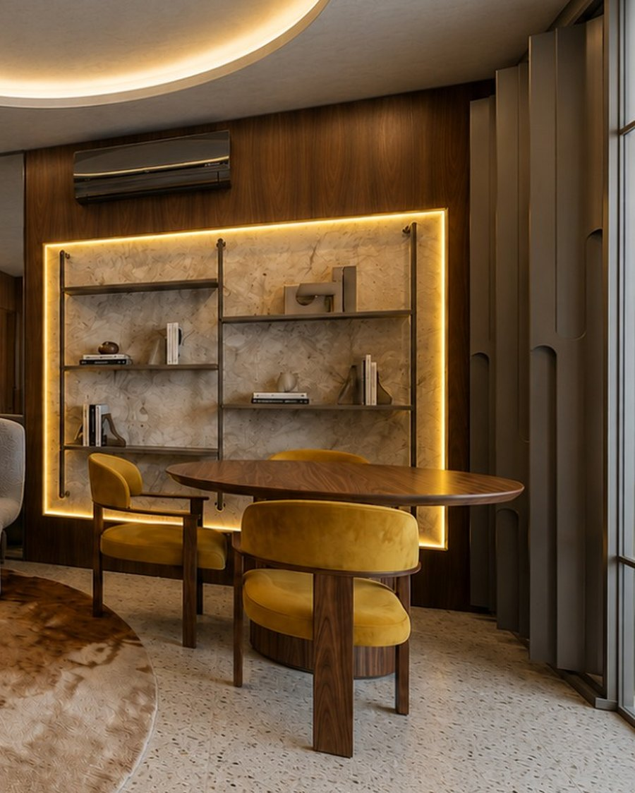
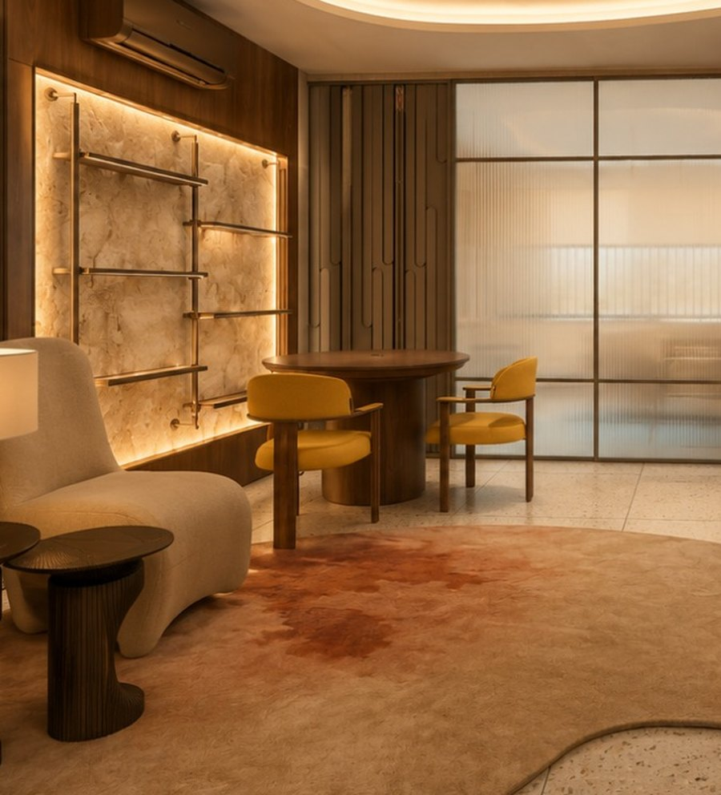

Planejados Bartzen
Painéis em Freijó e painel curvo
Os painéis em Louro Freijó envolvem o loft e acompanham a curva da parede do estar, criando um fundo contínuo e acolhedor para o sofá e a obra de arte.
Na área de jantar e home office, os painéis emolduram o nicho iluminado com prateleiras metálicas suspensas.
No Studio Bossa: nas paredes do estar e em volta do nicho iluminado do jantar.
| Material | MDP Louro Freijó Trend |
|---|---|
| Painel curvo | Acompanha o raio da parede do estar |
| Nicho | Moldura em freijó com fita de LED e prateleiras metálicas |
Disponível na Casa Contente · Peça do Studio Bossa, assinado por Tatiane Madeiro (Studio TM) para a Casa Liv 2026.